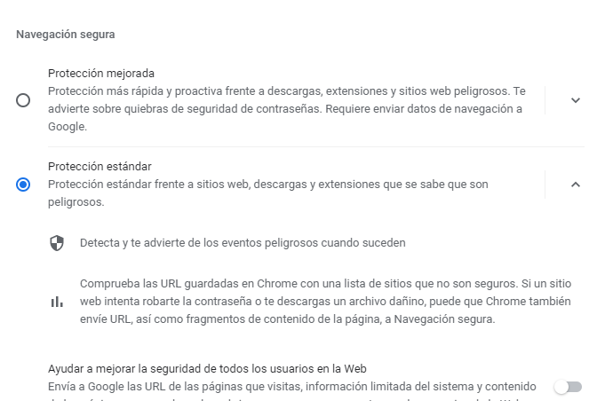
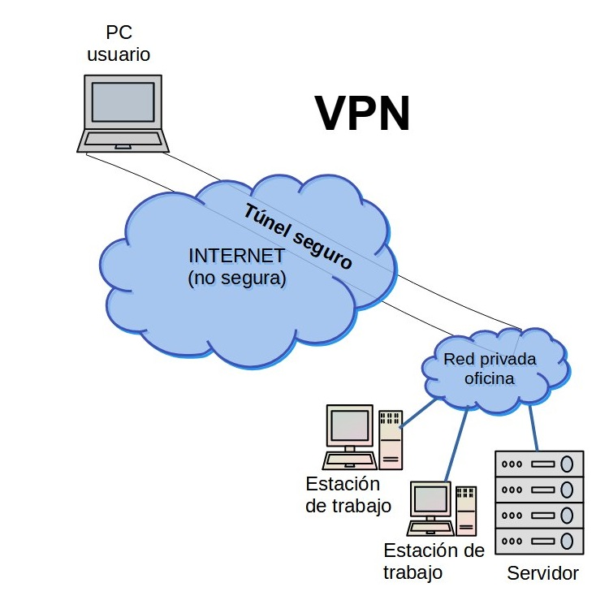

Tanto en el ordenador como en el teléfono móvil podemos activar las opciones de navegación segura de Google Chrome para visitar cualquier página web.
Navegación segura en Chrome
Accedemos a la navegación segura desde los tres puntos de la esquina superior derecha del navegador y pinchando en “Seguridad y privacidad” en el panel de la izquierda. Una vez aquí, abrimos “Navegación segura” .

Podemos elegir entre tres tipos de protección:
- mejorada: es la protección más completa frente a descargas, extensiones y sitios web peligrosos. Pero, como contrapartida, necesita enviar los datos de navegación a Google, con lo cual compromete la privacidad.
- estándar
- sin protección: es la opción menos recomendada.
Otras opciones de configuración avanzada que podemos activar son:
Usar siempre conexiones seguras
Usar DNS seguro
Gestionar certificados
Programa de Protección Avanzada de Google
Una de las características más importantes de la seguridad de Chrome es que trabaja con "sandbox". Cada ventana y cada pestaña que tengas abiertas en Chrome tiene un funcionamiento independiente, así si abres una página de internet que contenga algún archivo malicioso, las otras ventanas estarán a salvo.
Aunque Chrome tenga herramientas para proteger la seguridad de nuestro equipo, es muy importante que usemos nuestro sentido común a la hora de navegar por Internet.
Indicadores de Seguridad del sitio web
El protocolo web HTTPS es una combinación del protocolo HTTP con el protocolo de cifrado SSL/TLS usado para establecer comunicaciones seguras a través de Internet y proteger la información que viaja entre el servidor web y nuestro navegador.
Cuando accedemos a una página web que comienza por "https" aparece en la barra de direcciones del navegador, junto a la dirección de la página, el símbolo de un candado. Si no se muestra ningún mensaje de advertencia en color rojo, es que el protocolo SSL/TLS ha funcionado correctamente y nuestro navegador ha accedido al certificado de dicho sitio web y ha comprobado la validez del mismo. Si el navegador advierte que el certificado ha sido emitido por una entidad que no se encuentra en la lista de Entidades Certificadores de confianza almacenadas en nuestro dispositivo, muestra una advertencia para indicárnoslo. Podemos acceder a esta lista desde el navegador Chrome haciendo clic en Configuración > Privacidad y seguridad > Gestionar los certificados del dispositivos.
Si hacemos clic sobre el candado, a la izquierda de la dirección web, el navegador nos mostrará información al respecto. Antes de introducir información sensible o de tipo bancario en una web, verifica siempre que este icono aparezca.
Conectarse a Internet a través de una VPN
Cuando usamos Internet, a través de un ordenador o un móvil, este se comunica a través del router con el proveedor de Internet (ISP), que es el que conecta con los distintos servicios de la red.
En el caso de una conexión VPN, Red Privada Virtual, esto cambia. Una VPN establece una conexión segura y cifrada entre nuestro ordenador e Internet y proporciona un túnel privado para nuestros datos y comunicaciones mientras utilizamos las redes públicas.

Ventajas de conectarse a una VPN
- Conexión a redes privadas con seguridad (teletrabajo).
- Añade una capa extra de seguridad en las conexiones a redes públicas ya que la información va cifrada.
- Permiten saltar bloqueos o censuras de algunos países.
- Oculta nuestra IP.
- Útil en descargas P2P (descargas torrents).
- Tu proveedor de Internet no puede saber de tus actividades de navegación por Internet.
Inconvenientes de las VPN
- Hay compañías que ofrecen servicios VPN gratis, pero con bastantes limitaciones. Otra opción es pagar una cuota mensual.
- La seguridad tampoco es infalible, además tienes que confiar en la empresa que te proporciona el servicio VPN, ya que esta puede acceder a tu información (qué te descargas, por qué páginas navegas, etc.).
- La navegación por la red es más lenta.
Para conectarnos en Windows 10 a una VPN: Configuración > Red e Internet > VPN > Agregar una conexión VPN. En esta ventana, rellenamos la información del servidor, el tipo de VPN y las credenciales.